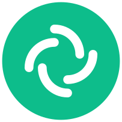

Tour de Basse Silésie :: Brzeg & Opole 2024
Zapraszam na regionalną wycieczkę rowerową do Brzegu, podczas której obejrzymy Zamek Królewski w Brzegu, Stobrawski Park Krajobrazowy (i atrakcje takich znajdujących się w nim miejscowości jak Karłowice, Pokój czy Zagwiździe) oraz Opole.
Łączny dystans pokonywany rowerem to ok. 75 km. Będziemy jechać tempem spacerowym i robić przerwy w jeździe, wyjazd ma charakter turystyczno-wypoczynkowy, nie sportowo-wyczynowy.
Jak widać na załączonej mapce, trasa jest daleka od przebiegania w linii prostej między punktami – jeśli wystąpią trudności lub podróż będzie przebiegała wolniej niż zaplanowano, będzie możliwość złagodzenia krzywej i skrócenia dystansu. Droga wiedzie również w pobliżu stacji kolejowej Jełowa (oznaczona na mapie) co umożliwia awaryjne skrócenie wycieczki w wypadku deszczu lub rezygnacji po przejechaniu 66 km, jednak w weekendy jedyny kurs do Wrocławia na który możemy zdążyć (z przesiadką do IC w Opolu) odjeżdża stamtąd o g. 20:09, zatem jest to opcja zarezerwowana na ostateczność. (W takim wypadku, ze względu na przesiadkę między przewoźnikami Regio i IC konieczna też jest dwukrotna opłata za rower.)
Do Brzegu dojeżdżamy prawdopodobnie pociągiem Intercity, w którym miejsca są numerowane. Z tego względu ważniejsza niż zazwyczaj jest informacja zawczasu o udziale, ponieważ może być konieczność zmiany połączenia (i godziny zbiórki) na pociąg PolRegio w przypadku braku miejsc. Nie kupuj zawczasu biletów na przejazd! Aby skorzystać ze zniżek grupowych, bilety kupuje (i rozlicza) organizator.
Godzina i miejsce zbiórki
sobota 10 sierpnia, g. 08:25, Dworzec Wrocław Główny, pod zegarem
Trasa przejazdu
Kliknij na mapę w pinezkowym miejscu
Przejazdy kolejowe
| Przewoźnik | Odjazd | Stacja odjazdu | Przyjazd | Stacja przyjazdu |
|---|---|---|---|---|
|
|
08:47 | Wrocław Główny | 09:15 | Brzeg |
|
|
21:19* | Opole Główne | 22:35 | Wrocław Główny |
Kilka zdjęć przybliżających formułę wyjazdu


Pytania pojawiające się w przeszłości
Co powinienem/innam zabrać ze sobą?
- wodę i/lub napój izotoniczny
- suchy prowiant
- światło rowerowe
- gotówkę na bilety wstępu/pamiątki
- dokument tożsamości, dokument uprawniający do zniżki jeśli masz
- naładowany powerbank
- czapkę i krem z filtrem
- aparat fotograficzny
- ciemne okulary
- środek przeciwko komarom
- mnóstwo dobrej zabawy!
Czy będziemy się poruszać po drogach z szybkim ruchem samochodowym?
Trasa jest celowo wytyczana tak, by w miarę możliwości unikać dróg dla samochodów, szczególnie szybkiego ruchu i większość przebiega po ścieżkach nieutwardzonych i leśnych, co możesz zweryfikować na załącznej mapce. Z dróg wojewódzkich przejedziemy ok. 1.3 km drogą  i 700 m drogą
i 700 m drogą  (może się zmienić w trakcie w przypadku nieprzejezdności zaplanowanego szlaku.)
(może się zmienić w trakcie w przypadku nieprzejezdności zaplanowanego szlaku.)
Czy mój miejski/górski/… rower nadaje się do tej trasy?
Każdy sprawny rower nadaje się do tej trasy. Różnice w klasach między rowerami mogą mieć wpływ na to, jak łatwo będzie Ci się jechać i jaką mógłbyś rozwinąć i utrzymać prędkość, co nie ma znaczenia na rekreacyjnej powolnej wycieczce tego typu.
Czy zdążymy? Co w ogóle gwarantuje organizator?
Pociągi z Opola do Wrocławia odjeżdżają częto i do późna (ostatni o 23:51), więc trudno wyobrazić sobie, byśmy nie zdążyli wrócić, niezależnie od tempa jazdy. W razie konieczności możemy modyfikować/skracać trasę, wszystkie możliwości awaryjnego powrotu zostały opisane wyżej. Jednak organizator nie gwarantuje niczego, jego rola ogranicza się do zaproponowania programu wycieczki i pilotowania, każdy uczestnik uczestniczy na własne ryzyko (ale jak wielkie może być ryzyko takiej wycieczki?). Wyjazd ma charakter eksperymentalny, a zaproponowana trasa nie była wcześniej testowana – może to oznaczać, że miejscami będzie nieprzejezdna i wymagana będzie korekta/improwizacja.
Czy mogę zabrać znajomych?
Serdecznie zapraszamy! Przekaż zainteresowanym adres tej strony. Będę wdzięczny za informację zawczasu o ewentualnych dodatkowych uczestnikach, ponieważ możliwość przewozu rowerów w PKP jest ograniczona i konieczne jest monitorowanie liczby chętnych.
W przypadku dodatkowych pytań/chęci zgłoszenia się kontakt z organizatorem
|  @jwodzinski:matrix.org |
|
|
| telefon |